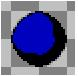

The tar can only be penetrated at flat areas around its perimeter. Corners withstand sword punctures. It is possible to carve some tar into a shape that cannot be reduced any further because there are no exposed flat areas to strike. The four squares of tar below are an example of this:

When tar is stabilized it poses no threat at all and can be left alone. But when Beethro cuts through the tar with his sword, it reshapes itself dynamically and tar babies may spring from the new formation. It is difficult to explain the rules for tar reshaping in words, but if removing a square of tar by hitting it with the sword causes adjacent tar areas to be only one square wide or high, those affected squares will change to tar babies.
Tar babies will attack on the turn following their formation and in the same manner as dungeon roaches. They are the only element of the Living Tar that can destroy Beethro, though he may become trapped by growing tar.
If a tar mother is present in the room, the tar will grow outward every thirty turns. The only way to stop this growth and stabilize the tar is to destroy the tar mother by carving a path through the tar to her. The expanding tar may create tar babies as it tries to fill crevices less than two squares wide.
If there is more than one tar mother in a room, all tar mothers must be destroyed to stop the tar from growing.